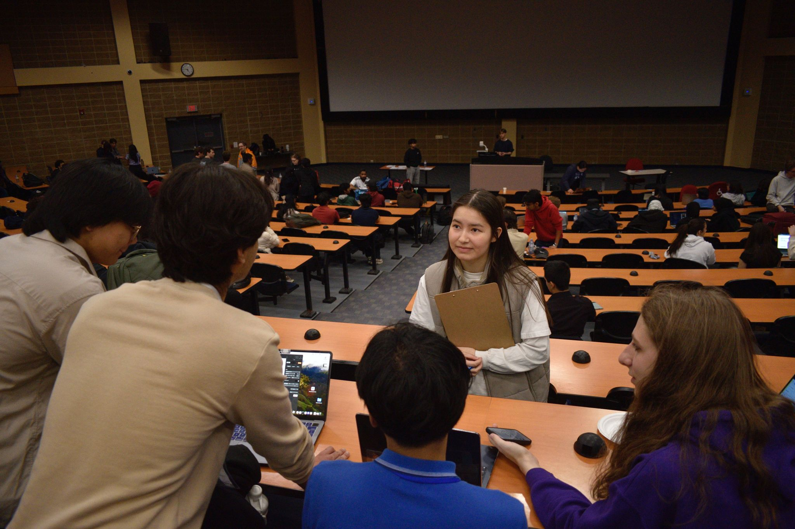
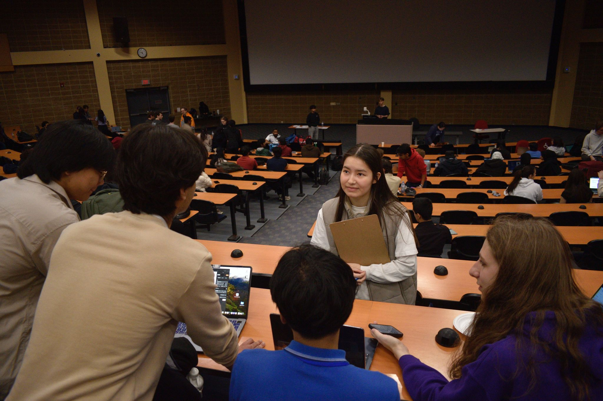

GDSC Hacks
Hackathon Organizer and Mentor
 

GDSC Hacks is a hackathon hosted by the Google Developer Student Club at Guelph, where students collaborate for 30 hours to develop unique software projects from scratch. We empower participants by offering a variety of resources, including workshops, mentoring, fun events, and sponsorship opportunities.
As part of the organizing team, I helped with sponsorship outreach and partnership coordination,
ultimately securing over $8,000 in funding and forming a key collaboration with the one and only Major League Hacking (MLH)! Through that
collaboration we got huge sponsors like GitHub and Google.
Once sponsorship was in place, I led the execution of a targeted marketing strategy (with zero paid efforts) that attracted
over 850 applicants. I had to think outside the box and reflect on how I could disperse the news to anyone who may be interested. Some efforts included
reaching out to other GDSC chapters across Ontario, lecture hall visits where I pitched the event to hundreds of students, and of course social media posts.
Through consistent engagement and strategic promotion, we achieved an impressive 68% turnout rate, well above
average for university hackathons.
Beyond the logistics, I was also hands-on during the 3 day event itself, mentoring participants and serving as a judge for final project
submissions. I provided technical guidance on machine learning, front-end development, and overall project design/impact to over 200 students,
many of whom were attending their first hackathon. The experience deepened my skills in community building, technical mentorship, and
cross-functional coordination, all while balancing the fast-paced, high-stakes environment that defines student-run tech events.
Check out the article the College of Engineering and Physical Sciences made about it here!
It includes a link to the Devpost and the photo drive.